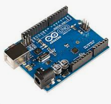
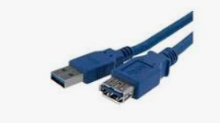
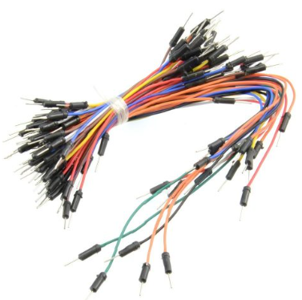
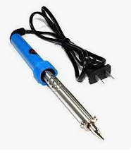
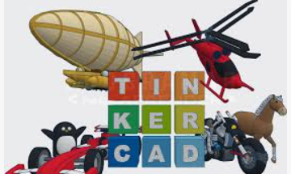

🔧 Componentes utilizados en el proyecto
🟢 Arduino
Arduino es una placa electrónica programable que permite controlar dispositivos electrónicos mediante instrucciones previamente diseñadas. En este proyecto, Arduino funciona como el cerebro del sistema, ya que recibe, procesa y ejecuta órdenes para el funcionamiento del juego interactivo. Su uso favorece el desarrollo del pensamiento lógico, la resolución de problemas y la programación básica.

🟡 Placa (Protoboard)La placa protoboard es una base de conexión que permite montar circuitos electrónicos de forma temporal, sin soldar los componentes. Se utiliza para organizar los cables y recordar las conexiones del circuito, facilitando la experimentación y el aprendizaje práctico en robótica educativa.
La pantalla LED es un dispositivo de salida que permite mostrar información visual, como símbolos, imágenes, colores o resultados del juego. En el proyecto, la pantalla LED se utiliza para representar el contenido del juego de memoria, brindando retroalimentación visual al usuario y reforzando el aprendizaje de forma lúdica e interactiva.
🔷 Cable USB (cable azul)
El cable USB es el medio de conexión entre la computadora y la placa Arduino. Su función principal es:
- Transferir el programa desde el computador hacia la placa
Suministrar energía eléctrica al sistema
Este cable es fundamental para la programación y puesta en funcionamiento del proyecto.
Cables de conexión (jumper)

- Los cables de conexión o cables jumper son conductores eléctricos que permiten interconectar los diferentes componentes electrónicos sin necesidad de realizar soldaduras.
- Estos cables pueden presentar terminales tipo pin, que se insertan directamente en los conectores, y terminales tipo receptáculo, que reciben el pin para asegurar la conexión.
- Su uso facilita el armado y la organización del circuito, promueve un trabajo seguro y permite realizar modificaciones rápidas durante el desarrollo del proyecto tecnológico.
🛠️ Ponchadora
-
La ponchadora es una herramienta utilizada para fijar y asegurar conectores en los extremos de los cables, garantizando una correcta sujeción y un buen contacto eléctrico. Su uso es fundamental para lograr conexiones firmes y seguras, evitando que los cables se suelten durante el funcionamiento del proyecto.
-
En el desarrollo del proyecto, la ponchadora permitió preparar adecuadamente los cables de conexión, contribuyendo a un montaje ordenado, seguro y funcional del sistema electrónico.
🔥 Cautín o soldador eléctrico
El cautín, también conocido como soldador eléctrico, es una herramienta utilizada para unir componentes electrónicos de forma permanente mediante la aplicación de calor y estaño. Su función principal es derretir el estaño para crear conexiones firmes y conductoras entre cables, pines y componentes electrónicos.

En proyectos con Arduino, el cautín se emplea para asegurar conexiones eléctricas cuando se requiere mayor resistencia y estabilidad en el circuito. Su uso debe realizarse con precaución, siguiendo normas de seguridad, debido a las altas temperaturas que alcanza.
🛡️ Nota educativa
El uso del cautín debe realizarse bajo la supervisión del docente, utilizando medidas de seguridad como base térmica y evitando el contacto directo con la punta caliente.
El uso del cautín contribuye a un montaje más duradero, mejora la calidad del circuito y fortalece el aprendizaje práctico en electrónica y robótica educativa.
💻 Tinkercad

Tinkercad es una herramienta digital en línea que permite diseñar, programar y simular circuitos electrónicos de manera virtual. A través de esta plataforma, es posible crear el código y probar el funcionamiento del proyecto antes de llevarlo a la práctica con los componentes físicos.
- En el desarrollo del proyecto se utilizó Tinkercad para elaborar el código, simular el circuito con Arduino y verificar su correcto funcionamiento, lo que permitió identificar errores y realizar ajustes de forma segura y eficiente.
- El uso de Tinkercad favorece el aprendizaje experimental, el pensamiento lógico, la comprensión de la programación y reduce riesgos durante el montaje físico del circuito, convirtiéndose en una herramienta clave dentro de la robótica educativa.
📘 Importancia de los componentes en el proyecto
El uso adecuado de estos componentes permite la construcción de un proyecto interactivo, fortaleciendo las competencias digitales, el aprendizaje activo y el trabajo colaborativo, elementos clave en la robótica educativa y la innovación pedagógica.